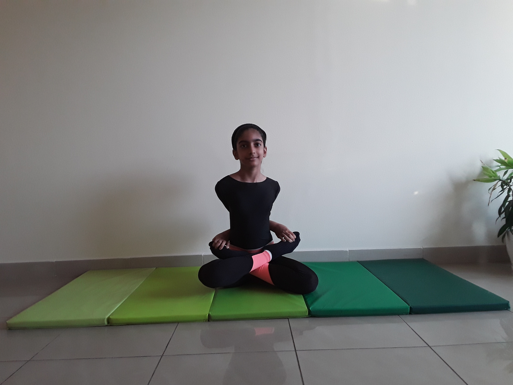

LOCKED LOTUS POSE

Steps to perform Locked Lotus Pose
- Sit in Padmasana or the Lotus pose. To accomplish this, sit on the floor with legs relaxed. Take the right leg and place it on the left thigh and then take the left leg and place it on top of the right thigh. This is the classical cross legged Lotus pose. One may also place the right leg over the left leg which can be seen in ancient sculptures of yogis and of Buddha in meditation.
-
Take the left hand behind the back and hold the toe of the leg on the opposite side. Similarly, take the right hand behind the back and hold the toe of the feet on the left side. This requires a bit if flexibility.
-
Bend the head down and place the chin on the chest. This is the chin lock or Jalandhara Bandha.
-
Place your gaze on the tip of the nose. This is called Nasikagra Drishti. The eyes can be kept partially closed.
-
Maintain this pose for as long as comfortable. Once you master this pose, it can be used for prolonged meditation sessions.
-
One of the popular variations of Baddha Padmasana that is practiced today does not use the chin lock and the nose tip gazing. Instead, after step 2, bend the trunk forward and touch the ground with your forehead. Exhale slowly while you bend forward. Do this slowly with full awareness.
-
Remain in this pose for as long as possible. Then inhale slowly and raise the head and straighten the trunk. Take few normal breaths. Repeat the process as many times as you desire.